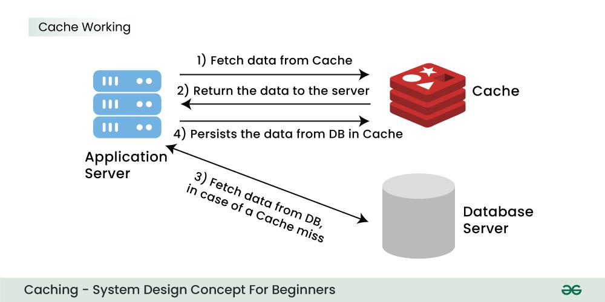
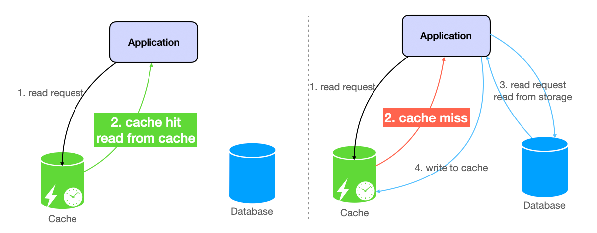

System Design Mastery
Master scalable systems with premium insights
💾 Caching: Speed Through Strategic Storage
1️⃣ What is it?
Caching is a technique where frequently accessed data is stored in a fast storage (memory) so that future requests can be served quickly without hitting the database.
In system design, cache usually means:
- 🔧 In-memory storage (like Redis, Memcached)
- ⚡ Much faster than database (microseconds vs milliseconds)
- 💾 Temporary data storage (automatically expires)
2️⃣ Why Does It Exist? (What Problem Does It Solve?)
Caching exists to solve performance and scalability problems. It helps to:
- 📊 Reduce response time by 10-100x
- 🗄️ Reduce database load significantly
- 🚀 Handle high traffic efficiently
- 💰 Save infrastructure costs
💭 Without caching: Every request must go to the database, which is slow and expensive.
3️⃣ What Breaks Without It?
If caching is not used:
- 🔴 Database gets hit for every request
- 🐌 Response time becomes slow (seconds instead of milliseconds)
- 💥 Database can overload during peak traffic
- ❌ System may crash under high load
📌 Real-World Example:
During a sale, thousands of users open the same product page → DB overload → website goes down ❌
4️⃣ Caching Layers (Where to Cache)
🌐 Browser Cache
Client-side storage for static assets (images, CSS, JavaScript). Controlled via HTTP cache headers.
🌍 CDN Cache
Geographically distributed edge servers that cache content closer to users. Very fast for global users.
⚙️ Application Cache
In-memory stores like Redis & Memcached. For frequently accessed data, sessions, API responses.
🗄️ Database Cache
Query result caching and buffer pools within the database system itself. Built-in optimization.

📊 How caching reduces database load by serving requests from fast memory storage
5️⃣ Cache Invalidation Strategies (The Hard Part!)
- TTL (Time To Live): Automatically expire cached data after a specified duration. Simple but may serve stale data.
- Write-through: Update cache and database simultaneously. Ensures consistency but slower writes.
- Write-behind (Write-back): Update cache immediately, database asynchronously. Fast writes but risk of data loss.
- Cache-aside (Lazy Loading): Application manages cache explicitly. Load from database on cache miss, then populate cache.
- Event-driven Invalidation: Invalidate cache entries when related data changes using pub/sub patterns.
📋 Cache-Aside Pattern Visual

The most common pattern where your application logic decides when to read/write to cache and database.
Want a deeper dive? Checkout this page for types of caching, strategies & eviction policies →
6️⃣ When to Use It / When NOT to Use It
✅ When to Use Caching:
- 📖 Data is read frequently
- 🔄 Data does not change very often
- ⚡ Low latency is required
- 📈 High traffic is expected
❌ When NOT to Use Caching:
- 🔄 Data changes very frequently
- 🎯 Strong consistency is required
- 🔐 Data is highly sensitive
- ⏰ Real-time accuracy is critical
Examples Where NOT to Cache:
- 💳 Payment transactions - must be exact
- 🏦 Bank balance - must be current
- 🔐 OTP validation - single use only
- 📈 Real-time stock prices - must be live
7️⃣ One Common Mistake: Cache Invalidation Problem
🚨 The Scenario:
- Data is updated in database
- Cache still has old data ❌
- Users see outdated or wrong information
"There are only two hard problems in computer science: cache invalidation and naming things."
8️⃣ Real App Connection (How They Use Caching)
🛒 E-commerce App
- ✅ Product catalog → Cache
- ✅ Cart data → Cache (short time)
- ❌ Orders & payments → Database only
💬 Chat Application
- ✅ User profile → Cache
- ❌ Messages → Database
- ✅ Online status → Cache
🎬 OTT Platform
- ✅ Home feed → Cache
- ✅ Video metadata → Cache
- ❌ Watch history → Database
9️⃣ Why Not Use It Everywhere?
Caching should not be used everywhere because:
- 🔧 Cache adds complexity to the system
- 📊 Maintaining consistency is difficult
- 💰 Extra infrastructure cost (Redis, Memcached servers)
👉 For critical data, correctness is more important than speed.
🧠 Summary
Caching improves system performance by storing frequently accessed data in memory, reducing database load and response time.
However, it should not be used for highly dynamic or sensitive data due to consistency issues.
If caching is not suitable, alternatives like read replicas, CDNs, or query optimization can be used.
💡 Pro Tip
Start with simple TTL-based caching, and only add complexity when needed. Monitor cache hit rates - aim for 80%+ for optimal performance gains.
Tools to consider: Redis (fast, in-memory), Memcached (distributed), Varnish (HTTP caching), or built-in caching in frameworks like Django/Spring.